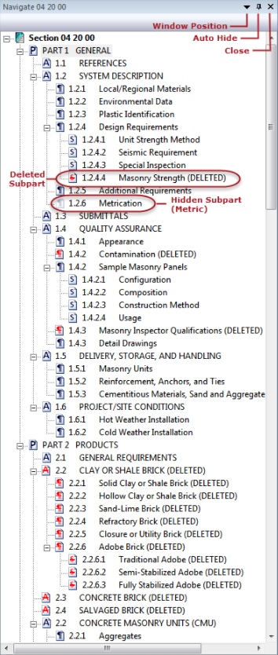
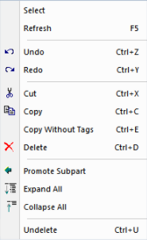
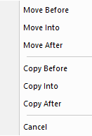

The SI Editor's Navigator is designed with the user in mind to streamline navigation throughout the specifications structure, eliminating the risk of getting lost in the text and facilitating seamless movement through a Section without losing one's place. It also provides advanced and convenient editing capabilities to simplify the editing process. Some key features include:
- Highlighting
- Deleting and Undeleting Subparts
- Undo and Redo
- Promote Subparts to the next higher level
- Move, Copy, or drag-and-drop Subparts before, into, or after other Subparts
While working in the Editing window, the Navigator will follow the cursor movement.
Getting to Know The Navigator

Navigator Icons
|
Icons |
Description |
| PART | |
| ARTICLE | |
| Paragraph | |
| Subparagraph | |
|
|
Added: Attribute: Green with underscore Applies to the PART, ARTICLE, Paragraph, and Subparagraph Icons |
|
|
Redlined: Attribute: Red with strikethrough Applies to the PART, ARTICLE, Paragraph, and Subparagraph Icons |
|
Hidden: Attribute: Transparent Opaque Applies to the PART, ARTICLE, Paragraph, and Subparagraph Icons when elements are hidden such as added and deleted Revisions, Tailoring Options, Metric, and English measurements |


 You can change the Navigator settings from two locations, the View menu > Toolbars and Docking Windows > Options > Display and Navigator tab, or the Tools menu > Options > Display and Navigator tab. The Use Navigator checkbox is selected by default, but an SI Editor restart is required for the changes to take effect.
You can change the Navigator settings from two locations, the View menu > Toolbars and Docking Windows > Options > Display and Navigator tab, or the Tools menu > Options > Display and Navigator tab. The Use Navigator checkbox is selected by default, but an SI Editor restart is required for the changes to take effect.
The Navigator's Right-Click Menu
 Click the menu option below to navigate to a different menu option.
Click the menu option below to navigate to a different menu option.

The Navigator's Move Or Copy Pop-up Menu
The Navigator offers two distinct drag-and-drop methods to move or copy Subparts within the Section:
- Left-Click Drag-and-Drop: This is the standard method to copy or move Subparts, executed by clicking and dragging the selected Subpart to the desired location. Upon release, a confirmation window appears stating that the Subpart has been copied or moved.
- Right-Click Drag-and-Drop: This method provides more precise options than the standard Copy or Move commands. Execute this option by right-clicking and dragging the selected item to the desired location. Upon release, the right-click pop-up menu opens allowing you to copy or move the selected Subpart before, into, or after another Subpart.
 Click the menu option below to navigate to a different menu option.
Click the menu option below to navigate to a different menu option.

Additional Learning Tools
 Watch The Navigator eLearning module within Chapter 3 - Editing.
Watch The Navigator eLearning module within Chapter 3 - Editing.